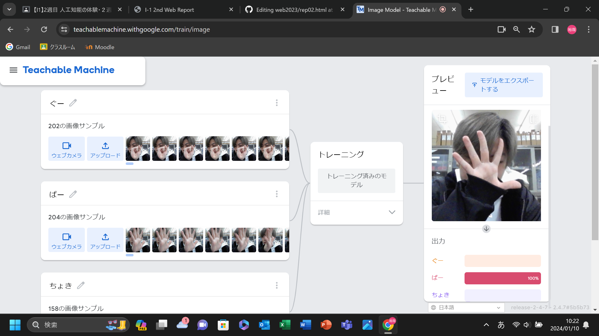
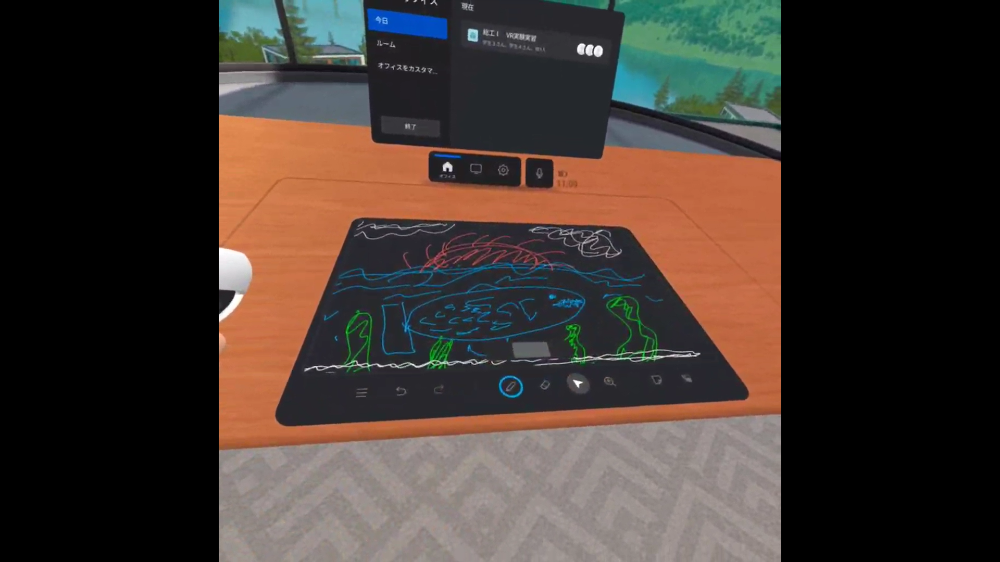

第2週目
2-1 １週目のレポートをHTMLで作る
１週目のレポート
1.内容
もともと作られているプログラムの文字の部分だけを
書き換えて、写真なども入れ、レポートを作成した。
2.感想
書き換えるだけだったので簡単だった。
改行が反映されず、少し不便だと思った。
2-2 機械学習体験

1.内容
AI、日本語で人工知能とは、人がモノを教えたりすることで学習し、自分で考えることもできるで、
それに何かを教えることを、機械学習という
機械学習といっても、何も知らない赤ちゃんのようなものなので、
足し算などほんとに基礎の基礎から教える必要もある
量をたくさん教える必要がある
2.感想
本当に位置から判別させるため、
背景など様々な情報を読み取るので、
手を見てと仮に命令できたとしても、
手ってどれですかとなるので本当に学ばせるしかないんだなと思った
2-3 VR（バーチャルリアリティー：Virtual Reality）会議室の体験

1.内容
VRゴーグルをつけて絵をかいたり、バーチャル空間で人と話したりした。
2.感想
このようなものも、品質などを上げれば実際にミーティングに利用でき、
役に立つだろうなと思った。
もう少し遠くでも普通に聞こえるのかも試してみたかった。